Action Scripting
Action Scripting allows you to "program" in a menu driven environment. You respond to the prompts presented to you, and then, behind the scenes, Alpha Five translates your responses into the appropriate Xbasic code.
Once you have created an Action in an Action Script, you can always go back and edit the Action in the same prompted environment.
For those who want to eventually learn Xbasic, Action Scripting is an ideal starting point. For each Action you create, you can view the corresponding Xbasic code. The code is extensively commented, so it is easy to understand.
Even experienced Xbasic programmers will often use Action Scripting to quickly generate error-free code, which can then be hand modified. You create Action Scripts in the Alpha Five Code Editor.
There are several different ways to open the Code Editor to create a new action script.
Method One
Display the Code tab of the Control Panel.
Click the New button.
Select Script (using Action Scripting).
Method Two
Display the Code tab of the Control Panel.
Click the Action Script icon
 on the toolbar.
on the toolbar.
Alpha Five opens a new pane in the <span class=Screen>Code Editor</span> , as shown below. The script is temporarily named "Untitled_1":
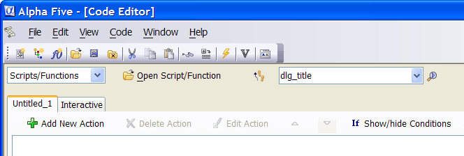
The Code Editor allows you to work on multiple scripts at the same time. In this case we have only one script open. Each time you open a new script, a new tab is added to the Code Editor. The Interactive tab is always present, and cannot be removed. You can work on a maximum of 15 scripts at the same time.
Adding an Action to the Action Script
Now let us start adding actions to our first Action Script. In this case we will build a simple script that asks a user for his or her name, and then displays a message box welcoming the user. At this point our Action Script is empty as it contains no Actions.
To add an Action to the script:
Click the
 button. Alpha Five displays the Select
Action dialog box, as shown below:
button. Alpha Five displays the Select
Action dialog box, as shown below:
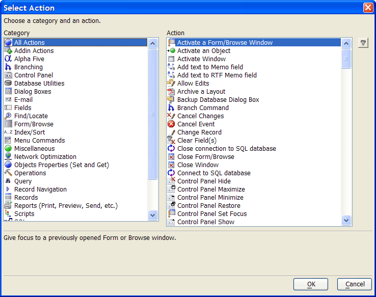
The dialog box has two lists, Category and Action. The selection in the Category list controls the available choices in the Action list. The initial selection is "All Actions".
There are several hundred different Actions, with more added all the time. So, finding the correct Action for your task can be time consuming. Fortunately, there's an easy way to ((|#Using_the_Filter_to_Find_an_Action|filter Actions to find what you need more easily)).
Using the Filter to Find an Action
In this case you want to prompt the user for their name. To filter the list of available Actions, click
 on the Select
Action dialog box.
on the Select
Action dialog box.
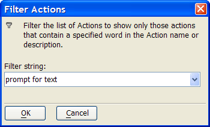
Enter prompt for text and click OK.
Click OK to select the Action. The Prompt for Text Genie opens. The Prompt for Text Genie lets you define details about the dialog box you want Alpha Five to display. For example, the Genie allows you to define the dialog box title, the prompt, and most importantly, the variable which will store the user's response.
Enter "Who are you?" in the Dialog Title field.
Enter "Please enter your name" for Prompt.
Enter "vcName" for Variable Name.
TIP : Using "vc" as a prefix for the variable name is an arbitrary, but useful, naming convention. It reminds you that this is a character variable.
You can ignore the remaining prompts in the dialog. Your screen should look like this:
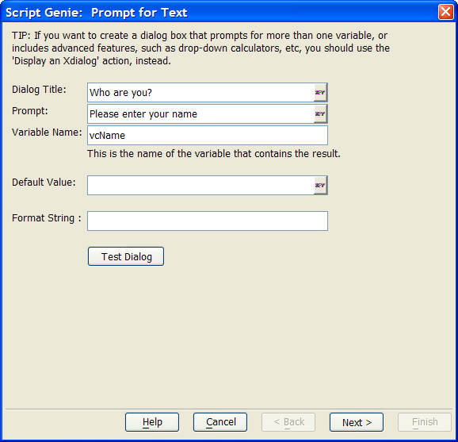
Click the Next > button. Alpha Five lets you enter an optional comment to help you remember what this Action does. Alpha Five always tries to create a meaningful default comment, which you can accept, or override.
Click Finish. You Action Script should now look like this, with one Action filled in:
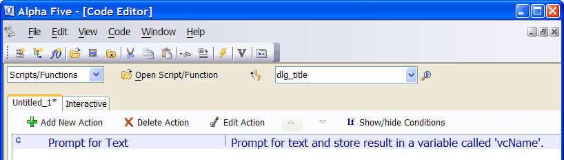
To prevent the loss of your valuable work, save the script. Click the Save button
 on the toolbar, and enter the name "Lesson1"
(if this script already exists, then just overwrite it).
on the toolbar, and enter the name "Lesson1"
(if this script already exists, then just overwrite it).
Note how the tab in Code Editor now says "Lesson1" without the asterisk next to the name. The asterisk indicates that a script has been edited, but not saved. as soon as you make any changes to this script, the asterisk will reappear.
Even though you have not yet completed this script, you can test your progress. Click the Run Script button
 on the toolbar,
or select Code > Run. Alpha Five runs the
script and displays a dialog box prompting the user for their name: Picture
on the toolbar,
or select Code > Run. Alpha Five runs the
script and displays a dialog box prompting the user for their name: Picture
{kind=link}
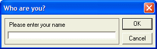
Click Cancel to close the dialog box.
To add the second step to the Action Script, click the
button.Select the "Dialog Boxes" category and the "Display a Message Box" action. Click OK to display the Display a Message Box Genie. The Display a Message Box Genie lets you to select the style of message box to be displayed. This example requires a dialog box with just an "OK" button.
Click Next > to accept the default style.
The next page in the Genie appears. Enter Welcome in the Title and Message field.
In the Enter the message to appear on the message box field enter an expression that uses the variable that created in the previous action. Click the Expression Builder button
 to
enter an Action. The <span class=Screen>Expression Builder</span> opens.
to
enter an Action. The <span class=Screen>Expression Builder</span> opens.In the expression entry box (where the insertion point is flashing), type (including quotes) "Your name is " +
Now, include the variable we created in the previous Action. Select "Variable", and click the Insert button (or press F6 ).
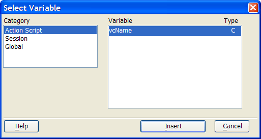
The Select Variable dialog box opens, displaying different categories of variables. Select the "Action Script" category to see the variable created in the previous Action for this Action Script. Select "vcName" and click Insert. (At this point, it's the only existing Action Script variable.) Your screen should now look like this:
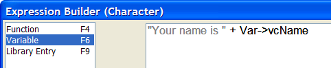
Click OK to close the Expression Builder.
Note that the entry in the message prompt starts with an "=" sign. This tells Alpha Five that the entry is an expression that should be evaluated when the message box is displayed. Click Next > to move to the next step. Alpha Five now displays the next page in the Genie.
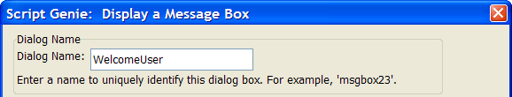
You must create a unique name to identify this message box. Enter "welcome_user". Do not use spaces in the name. as you start to type, more options on the dialog box become visible. You are not using any of these options right now, so just ignore them.
Click Next >.
Click Finish to accept the default comment that Alpha Five created. There are now two actions in your Action Script.
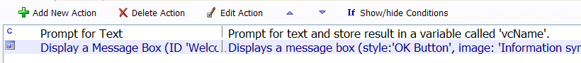
Click the Save button to save your script. Now test the script. You could just press the Run Script button as before. However, there is a different way to run scripts.
Close the Code Editor by closing the window. This should return you to the Control Panel. If the Control Panel does not have focus, then click the Control Panel button on the Window Bar at the bottom of the screen.
Display the Code tab of the Control Panel. You will see the script you just created listed.
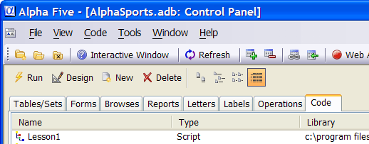
Run the script by either double-clicking the script name, or select the script and click the Run button. Alpha Five will prompt for the user name, and then it will display a message box welcoming the user.
Congratulations. you have just created your first Action Script.
To edit the script you just created:
Select the script in the Control Panel, then click the Design button. Alpha Five will open the Code Editor, showing the Actions in the script. Select the Action you want to edit.
Select the "Display a Message Box Action". There are three different ways in which you can edit an Action:
Double-click the action
Select the action and click the Edit Action button
Right-click the action and select Edit Action.
Click the Edit Action button. The Display a Message Box Genie launches, but this time it displays all the values you initially specified.
Click Next > to move to page two of the Genie.
Change the message displayed by the message box. Add the text: "Thank you for using Alpha Five" to the message. Your screen should now look like this (scrolled to the right):
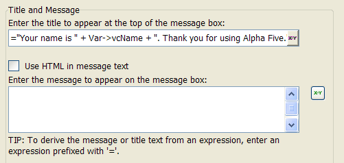
Click Next > twice, then click Finish to complete your edits. Alpha Five returns to the Code Editor. Because you have edited the "Display a Message Box" action, the tab label now shows "Lesson1*", indicating the changes haven't been saved.
Click the Save button to save your script, and then click the Run Action Script button to test the script.
Deleting an action from an Action Script is easy. Select the action and click the Delete Action button on the toolbar. You can also right-click the action you want to delete and select Delete Action.
Alpha Five executes the Actions in your Action Script in the order they
appear in the script. You can change the order of Actions in the Action
Script using the Move Action Up  and Move Action Down
and Move Action Down  buttons.
buttons.
Editing an Action Script Comment
There are three ways to edit comments for Actions. You may edit the Action itself (i.e. by clicking the Edit Action button) and step through the Genie pages until you reach the comments page.
However, this is a lot of unnecessary work if you only want to insert a helpful comment to describe the Action. More direct methods are to:
Click the Edit Comment button in the bottom right corner of the Code Editor
Right click the action and select Edit Comment
Action Scripts are basically an easy way to create Xbasic scripts. That is because when you create an Action Script, Alpha Five creates and stores the Xbasic code necessary to execute the Actions. For example, if you select the Action, Hide the Control Panel, Alpha Five interprets the following Xbasic code:
|
:controlpanel.hide() |
You can view the Xbasic code equivalent of any Action Script. You can also convert an Action Script into an Xbasic script, which makes learning Xbasic syntax easier. Action Scripts are a quick and easy way to produce Xbasic scripts, which you can then modify, by changing or adding Xbasic commands, to meet your needs.
An Action is a task that Alpha Five can do. For example, you can create an Action to make a button color green, change a field or text object font, or run an external program. There are also special Actions called branches.
A branch action is a decision point from which two or more courses of action are possible. For example, you can create a dialog which asks the user a question requiring a yes or no answer. If the user answers yes, Alpha Five performs one set of Actions; if the user answers no, Alpha Five performs another set of Actions.
As noted earlier, Action Scripting is a graphical front end to Alpha Five's Xbasic programming language. Each Action you define corresponds to some Xbasic code. When you run your Action Script, it is actually executing Xbasic code. You can view the corresponding Xbasic code for each Action in your Action Script.
Right-click on the "Prompt for Text" Action.
Select View Xbasic from the menu.
 TIP : You can also
click the View Xbasic button
TIP : You can also
click the View Xbasic button  on
the toolbar. Alpha Five shows the Xbasic code for the current action.
on
the toolbar. Alpha Five shows the Xbasic code for the current action.
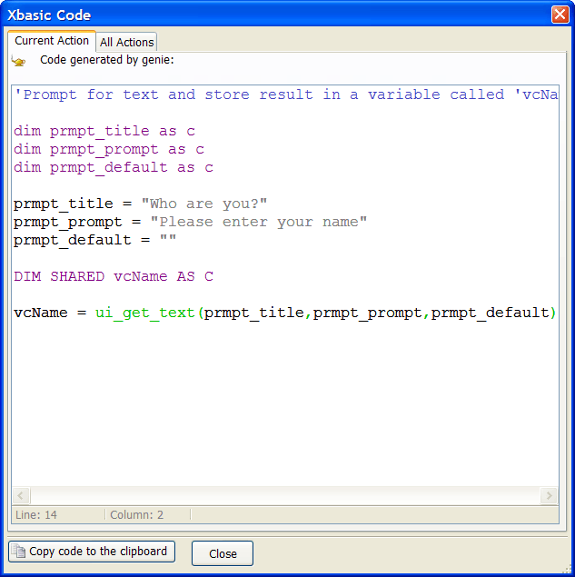
Note that this window has a second tab named All Actions.
Click the All Actions tab. Now, Alpha Five shows the Xbasic code for all actions in the current action script. Note the Copy code to the clipboard button which copies Xbasic code to the Windows clipboard.
Click the Close button to close the Xbasic Code window.
See Also
Categorized List of Actions, Xbasic Script Genie, Introduction to Action Scripting